정보통신산업기사 (2007-05-13 기출문제)
1과목: 디지털전자회로
1. 1[kHz]의 주파수를 500[Hz]로 변환하여 사용하고자 할 때 사용되는 Flip-Flop 회로는?
- RS F-F
- JK F-F
- T F-F
- D F-F
(정답률: 알수없음)

2. 다음 중 그 값이 작을수록 좋은 것은?
- 증폭기 바이어스 회로의 안정계수
- 차동 증폭기의 동상신호 제거비(CMRR)
- 증폭기의 신호대 잡음비
- 정류기의 정류효율
(정답률: 알수없음)
3. 전가산기(full adder)의 입⋅출력 구조는?
- 입력 2개, 출력 2개
- 입력 3개, 출력 2개
- 입력 2개, 출력 3개
- 입력 3개, 출력 3개
(정답률: 34%)
4. 다음 RL회로에서 기전력이 E일 때, SW를 닫는 순간 t초 후에 흐르는 전류(i)는?
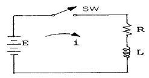
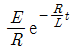
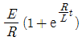
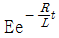
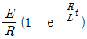
(정답률: 알수없음)
5. 다음 그림 회로의 용도는?(단, 다이오드는 이상적이고, VR1 ＜ VR2이다.)
- 클립핑
- 전압배율기
- 정류기
- 피크검출기
(정답률: 알수없음)
6. 다음 중 B급 푸시풀 전력증폭기(push-pull power amp)에서 제거되는 것은?
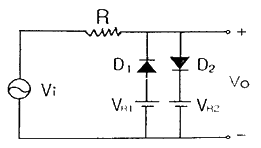
- 기본파
- 제2고조파
- 제3고조파
- 제5고조파
(정답률: 알수없음)
7. 다음 중 이미터 폴로어(Emitter follower) 증폭기의 특징이 아닌 것은?
- 부하에 병렬로 존재하는 정전용량의 영향이 적으므로 주파수 특성이 좋아진다.
- 전압 증폭도는 항상 1보다 크다.
- 임피던스 정합에 많이 이용된다.
- 출력 파형의 찌그러짐이 적다.
(정답률: 알수없음)
8. 변조도 50%의 진폭변조에서 반송파 평균전력이 500[mW] 일 때 피변조파의 평균전력은 약 얼마인가?
- 523[mW]
- 542[mW]
- 563[mW]
- 580[mW]
(정답률: 알수없음)
9. 다음 중 입력신호가 없어도 신호파를 발생시키는 회로는?
- 적분기
- 미분기
- 이상 발진기
- 시미트 트리거
(정답률: 알수없음)
10. 피어스(pierce) B-E형 수정발진회로는 컬렉터 회로의 임피던스가 어떨 때 가장 안정한 발진을 지속하는가?
- 유도성
- 용량성
- 저항성
- 부저항성
(정답률: 알수없음)
11. 다음 중 DPCM에 대한 설명으로 틀린 것은?
- 먼저 신호파를 표본화 한다.
- 양자화한 다음 부호화 한다.
- 송신측에 예측기가 필요하다.
- 주파수 분할방식으로 다중화가 쉽다.
(정답률: 알수없음)
12. 다음 펄스 파형에서 펄스의 Duty Cycle은 몇 [%]인가? (단, τ = 0.5[μs], T = 10[μs])
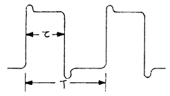
- 5[%]
- 10[%]
- 20[%]
- 25[%]
(정답률: 알수없음)
13. 다음 중 Flip-Flop과 가장 관계없는 것은?
- RAM
- Decoder
- Counter
- Register
(정답률: 알수없음)
14. 정논리(positive logic)에서 입력이 A, B일 때 회로의 출력(Y)을 나타내는 논리식은?
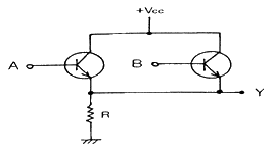
- AB
- A + B
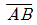
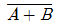
(정답률: 알수없음)
15. 다음 중 이상적인 차동증폭기에서 동상모드의 이득은?
- 0
- 1
- 180
- 무한대
(정답률: 알수없음)
16. 다음 그림에 나타난 연산 증폭기의 회로는?
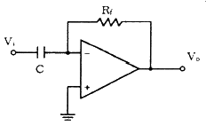
- 가산기 회로
- 적분 회로
- 미분 회로
- 차동증폭 회로
(정답률: 알수없음)
17. 아래와 같은 4변수 카르노도를 간단히 했을 때 논리식은?
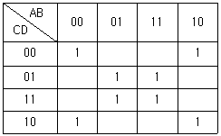
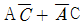
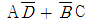
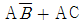
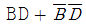
(정답률: 알수없음)
18. 다음 중 TTL gate에서 스위칭 속도를 높이기 위해 사용되는 다이오드는?
- 바랙터 다이오드
- 제너 다이오드
- 쇼트키 다이오드
- 터널 다이오드
(정답률: 알수없음)
19. 다음의 논리식을 최소의 NAND 게이트만으로 구성하기 위해 필요로 하는 NAND 게이트의 종류와 개수가 옳은 것은? (단, 인버터는 2입력 NAND 게이트를 사용함)
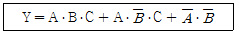
- 2입력 NAND 3개, 3입력 NAND 4개
- 2입력 NAND 3개, 3입력 NAND 3개
- 2입력 NAND 4개, 3입력 NAND 3개
- 2입력 NAND 2개, 3입력 NAND 4개
(정답률: 알수없음)
20. 트랜지스터의 스위칭 동작에서 turn-off 시간은?
- 지연시간(td)
- 지연시간(td) + 상승시간(tr)
- 축적시간(ts)
- 축적시간(ts) + 하강시간(tf)
(정답률: 알수없음)
2과목: 정보통신기기
21. 다음 중 CCTV의 기본구성요소가 아닌 것은?
- 촬상장치
- 표시장치
- 전송장치
- 간선증폭기
(정답률: 알수없음)
22. 다음 중 CATV의 기본구성요소가 아닌 것은?
- 헤드엔드
- 중계전송망
- 가입자설비
- 교환장비
(정답률: 알수없음)
23. 정보통신 시스템의 단말 장치에 사용되는 디스플레이장치와 관계없는 것은?
- 디지타이저
- 음극선관
- 플라스마
- 액정
(정답률: 알수없음)
24. 국제위성통신용 정지위성의 고도는 적도 상공에서 약 몇 Km 인가?
- 16000
- 26000
- 36000
- 46000
(정답률: 알수없음)
25. 다중화기와 비교하여 공동이용기의 가장 큰 장점은?
- 네트워크의 구성을 단순화함으로써 비용절감 효과를 기대할 수 있다.
- 공동이용기와 터미널 상이의 거리가 짧다.
- 공동이용기에 부착하는 터미널의 대수가 제한되지 않는다.
- 공동이용기를 이용하면 변⋅복조기가 필요 없다.
(정답률: 알수없음)
26. 다음 중 통신위성체(space segment)의 구성 요소가 아닌 것은?
- 전력공급부
- 신호증폭부
- 감시제어부
- 안테나부
(정답률: 알수없음)
27. 전자식 전화기의 푸시버튼 신호에서 고주파군에 사용되는 주파수가 아닌 것은?
- 1477[Hz]
- 1336[Hz]
- 1209[Hz]
- 941[Hz]
(정답률: 알수없음)
28. DSU(Digital Service Unit)의 기능이 아닌 것은?
- 신호파형의 변환
- 전송속도의 변환
- 제어신호의 삽입
- 데이터의 집중화
(정답률: 알수없음)
29. 멀티포인트(multi-point)모뎀에서 폴링(polling)할 때 발생되는 시간지연요소가 아닌 것은?
- 모뎀의 시간 지연
- 단말기의 시간 지연
- 거리에 따른 시간 지연
- 반송파 발생에 따른 시간 지연
(정답률: 알수없음)
30. FM신호 복조기로 이용되고 있는 PLL검파기의 기본 구성 요소가 아닌 것은?
- 저역통과필터(LPF)
- 전압제어발진기(VCO)
- 스켈치회로
- 위상비교기
(정답률: 알수없음)
31. 정보 단말기 기능 중 전송제어 기능이 아닌 것은?
- 입⋅출력 제어 기능
- 오류 제어 기능
- 출력 변환 기능
- 송ㆍ수신 제어 기능
(정답률: 알수없음)
32. 다음 중 모뎀 수신부의 특징이 아닌 것은?
- 복조기에서는 아날로그 입력신호를 원래의 디지털 신호로 변환한다.
- DTE로부터 온 디지털 신호의 전송을 위하여 스크램블링 과정을 거친다.
- 시간회로는 수신출력 디지털 펄수를 만들어내기 위한 일종의 타이밍 추출회로로 주로 동기식 모뎀에서 사용한다.
- 통신회선을 통해 들어오는 신호는 대역제한 여파기, 등화기, AGC 등을 거쳐 복조기로 입력된다.
(정답률: 알수없음)
33. 교환기의 통화량과 통화 접속 상황 등의 관계를 조사하는 파라미터와 관계 적은 것은?
- 최번시(Busy Hour)
- 보류시간(Holding Time)
- 호손율
- 데이터 전송률
(정답률: 알수없음)
34. 컴퓨터시스템에 데이터를 입력시키고 그 결과를 사람의 음성으로 출력시켜서 인간에게 전달하는 음성 입ㆍ출력장치 중에서 직접적으로 음성파형을 만드는 장치는?
- 음성분석기
- 음성합성기
- 음성인식기
- 음성제어기
(정답률: 알수없음)
35. CATV 단말계의 주요 설비 중 도청 방지를 위한 스크램블과 디스크램블 기능을 가진 부분은?
- 컨버터
- 홈 터미널
- 부가장치
- 구내 선로 설비
(정답률: 알수없음)
36. 다음 중 메시지 통신 시스템(MHS)의 기능으로 틀린 것은?
- 다른 서비스와의 상호 접속이 불가능하다.
- 컴퓨터의 기능으로서 다양한 부가 서비스를 제공한다.
- 복수의 수신자에게 같은 메시지를 배달하는 동보서비스 기능이 있다.
- 메시지 전송기능 및 사서함 기능이 있다.
(정답률: 알수없음)
37. 다원 접속방식 중 CDMA 방식의 장점이 아닌 것은?
- 가입자 수용 용량이 크다.
- 전력제어 및 동기 기술이 필요 없다.
- 간섭과 방해에 강하다.
- 다경로 페이딩을 극복 할 수 있다.
(정답률: 알수없음)
38. 아주 작은 네온전구의 집합과 같은 기능을 하는 평면형 표시 장치로 2매의 얇은 유리 기판 사이의 좁은 틈에 네온 등의 가스를 봉입하고, 유리의 내면에 수평 방향과 수직 방향으로 배열된 투명전극으로 구성되어 있는 것은?
- OLED
- PDP
- LCD
- CRT
(정답률: 알수없음)
39. 다음 비디오텍스의 방식 중 포토 그래픽 방식을 기본으로 한 것으로, 도형을 패턴 정보로서 부호화하여 보내는 방식은?
- CEPT 방식
- CAPTAIN 방식
- NAPLPS 방식
- TELEX 방식
(정답률: 알수없음)
40. 다음 중 2개의 음성대역폭 회선을 이용하여 광대역에서 얻을 수 있는 통신 속도를 이용하는 기기는?
- 광대역 다중화기
- 역 다중화기
- 지능 다중화기
- 시분할 다중화기
(정답률: 알수없음)
3과목: 정보전송개론
41. 다음 중 양자화 잡음이 나타나지 않는 변조방식은?
- PCM
- ADPCM
- DM
- FDM
(정답률: 알수없음)
42. 다음 중 광통신 시스템이 갖고 있는 일반적인 특성으로 볼 수 없는 것은?
- 유도장해가 없음
- 접속 용이
- 대용량 전송
- 장거리 중계
(정답률: 알수없음)
43. 디지털 데이터의 전송시 다음의 에러제어 방식 중 에러의 검출 및 수정을 할 수 있는 방식은?
- 해밍 코드 방식
- 에코 방식
- 그레이 코드 방식
- 패리티 검사 코드방식
(정답률: 알수없음)
44. LAN에 대한 설명으로 적합하지 않은 것은?
- 통산 단일조직에 의해 점유되어 있다.
- 넓은 지역(수십km)내의 각종 장치를 상호 접속하기 위한 범용 데이터 망이다.
- 전송선로로서 UTP 케이블이 널리 사용된다.
- 장비의 확장 및 재배치가 비교적 쉽고, 통신 속도가 고속이다.
(정답률: 알수없음)
45. PCM 통신에서 질이 낮은(low quality) 전송선로로도 장거리 전송이 가능한 가장 큰 이유는?
- 전력의 소모가 극히 적기 때문
- 변조과정에서의 잡음이 극히 적기 때문
- 잡음이 다소 있더라도 재생중계기를 사용하여 왜곡이 없는 신호로 재생이 가능하기 때문
- 누화와 잡음을 변조할 수 있기 때문
(정답률: 알수없음)
46. 선형 부호화된 코드어 1001101과 0100101의 해밍의 거리(Hamming Distance)는?
- 2
- 3
- 4
- 5
(정답률: 알수없음)
47. RZ와 NRZ에 대한 설명 중 옳지 않는 것은?
- RZ는 동기측면에서 NRZ보다 유리하다.
- NRZ는 한 비트의 점유율이 100% 인 부호이다.
- NRZ는 RZ보다 잡음에 대한 성능이 우수하다.
- RZ의 소요 대역폭은 NRZ소요 대역폭의 반이다.
(정답률: 알수없음)
48. 아날로그 신호의 표본화 시 표본화 주파수가 부적절하여 표본화된 신호의 주파수 스펙트럼이 서로 겹쳐 신호왜곡이 발생하는 것은?
- 과부하 잡음(Over load noise)
- 재밍(jamming)
- 에일리어싱(aliasing)
- 양자화 잡음(Quantizing noise)
(정답률: 알수없음)
49. CDMA 이동통신에서 많이 사용하는 디지털 변조방식은?
- GMSK
- BFSK
- OQPSK
- 64QAM
(정답률: 알수없음)
50. 문자동기전송에서 본문의 시작을 표시하는 문자 기호는?
- SYN
- SOH
- STX
- ETX
(정답률: 알수없음)
51. 광섬유케이블 내에서 손실의 직접적인 원인이 아닌 것은?
- 클래드에 이물질이 있을 때
- 광섬유의 마이크로 밴딩이 있을 경우
- 광섬유 접속시 축 어긋남이 생길 때
- 코어와 클래드의 경계면이 매끄럽지 않을 때
(정답률: 알수없음)
52. 단일모드 광섬유(single mode fiber) 케이블에 대한 설명 중 틀린 것은?
- 색분산이 존재한다.
- 모드간 간섭이 없다.
- 제조 및 접속이 어렵다.
- 모드가 한 개밖에 존재하지 않아 고속, 대용량 전송이 어렵다.
(정답률: 알수없음)
53. PCM시스템에서 상호 부호간 간섭(ISI)을 측정하기 위해 눈 패텀(eye pattern)을 이용하는데 눈을 뜬 상하의 높이는 무엇을 나타내는가?
- 잡음에 대한 여유도
- 시스템의 감도
- ISI 간섭없이 수신파를 샘플링 할 수 있는 주기
- 전송되는 데이터의 양
(정답률: 알수없음)
54. 광섬유케이블의 분산(dispersion)에 대한 설명 중 옳지 않은 것은?
- 파장 및 모드에 따른 전파 속도차 때문에 발생한다.
- 단일보드 광섬유에서는 색분산 및 모드분산이 생긴다.
- 다중모드 광섬유에서는 색분산 보다 모드분산 비중이 더 크다.
- GIF 광섬유를 사용하면 모드분산을 줄일 수 있다.
(정답률: 알수없음)
55. 변조에 대한 다음 설명 중 옳지 않은 것은?
- 정보신호를 반송파에 실어 보내는 것을 말한다.
- 잡음과 간섭의 제거 등 부수적인 이점을 얻기 위하여 실시한다.
- 피변조파 스펙트럼을 낮은 주파수(신호파) 쪽으로 내리는 조작을 말한다.
- 장거리 전송 및 FDM 등을 수행하기 위해 실시한다.
(정답률: 알수없음)
56. 전압 100V 는 몇 dBmV인가? (단, 1[mV]는 0[dBmV]이다.)
- 60
- 80
- 100
- 120
(정답률: 알수없음)
57. 2×106 비트가 전송될 때 20개의 비트 에러가 발생한 경우 비트 오율(BER)은?
- 1×10-6
- 4×10-6
- 10×10-6
- 10×10-5
(정답률: 알수없음)
58. 다음 보기는 OSI 7계층을 나타낸 것이다. 하위계층부터 상위계층 순서대로 나열한 것은?
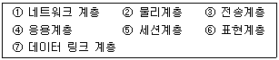
- ②→②→①→③→⑤→④→⑥
- ②→⑦→③→①→⑤→⑥→④
- ②→⑦→①→③→⑤→⑥→④
- ②→⑦→③→①→⑥→⑤→④
(정답률: 알수없음)
59. 한번에 3개의 비트를 PSK 방식으로 전송하고자 한다면 반송파간의 위상차는 몇 도가 되는가?
- 22.5
- 45
- 90
- 135
(정답률: 알수없음)
60. 과부하 잡음이 없는 경우 양자화 레벨의 수를 2배 증가(비트 수를 한 개 증가)시키면 입력신호 전력대 양자화 잡음전력의 비는 몇 dB 개선되는가?
- 3
- 4
- 5
- 6
(정답률: 알수없음)
4과목: 전자계산기일반 및 정보설비기준
61. 정보를 기억 장치에 기억시키거나 읽어내는 명령을 한 후부터 실제로 정보가 기억 또는 읽기 시작할 때까지의 소요 시간을 의미하는 것은?
- 접근 시간(access time)
- 실행 시간(run time)
- 지연 시간(idle time)
- 탐색 시간(seek time)
(정답률: 알수없음)
62. 컴퓨터에서 보수(complement)를 사용하는 이유로 가장 타당한 것은?
- 가산의 결과를 정확하게 얻기 위해
- 감산을 가산의 방법으로 처리하기 위해
- 승산의 연산과정을 간단히 하기 위해
- 재산의 불필요한 과정을 생략하기 위해
(정답률: 알수없음)
63. 마이크로프로세서 내에서 산술 연산의 기본 연산은?
- 덧셈
- 뺄샘
- 곱셈
- 나눗셈
(정답률: 알수없음)
64. 가장 최근에 인출된 명령어 코드가 저장되어 있는 일시적인 저장 레지스터는?
- MBR
- PC
- IR
- MAR
(정답률: 알수없음)
65. 기계어에 대한 설명으로 적합하지 않은 것은?
- 계산속도가 느리다.
- 작성된 프로그램은 판독이 어렵다.
- 하나의 명령으로 한 가지 처리만 된다.
- 컴퓨터 기종마다 명령어 체계가 다르다.
(정답률: 알수없음)
66. 데이터 처리 방식에 대한 설명 중 옳지 않은 것은?
- 일괄 처리 방식은 일정한 시간 내에 수집된 데이터 또는 프로그램을 일괄적으로 처리하는 방식이다.
- 시분할 처리 방식은 한 대의 컴퓨터를 동시에 다수의 사용자가 공동 사용하는 방식이다.
- 실시간 처리 방식은 데이터를 입력하는 즉시 처리 결과가 출력되어 되돌려 받는 방식이다.
- 온라인 처리 방식은 입⋅출력장치가 CPU의 직접 제어를 받지 않고 작업을 수행하는 방식이다.
(정답률: 알수없음)
67. 다음 선형리스트 중에서 데이터의 입력순서와 출력순서가 바뀌는 것은?
- QUEUE
- STACK
- FIFO
- HEAP
(정답률: 알수없음)
68. 단일 채널로 복수 개의 입ㆍ출력 장치를 연결할 수 있는 것은?
- Multiplexer
- Demultiplexer
- Encoder
- Decoder
(정답률: 알수없음)
69. 8진수 (1234)8을 10진수로 변환한 후, 다시 8421 코드로 변환하면?
- 0110 0111 1001
- 0110 0111 1000
- 0110 0110 0010
- 0110 0110 1000
(정답률: 알수없음)
70. 다음 중 DMA(Direct Memory Access)제어 방식에 대한 설명으로 틀린 것은?
- DMA 제어 방식은 마이크로프로세서를 거치지 않고 데이터를 전송하는 방식이다.
- DMA 장치는 블록으로 대용량의 데이터를 전송할 수 있다.
- DMA장치는 일반적으로 플로피 디스크를 포함, I/O 주변장치와 기억장치 사이의 데이터 전송에 사용된다.
- DMA 제어 방식은 프로그램 I/O제어 방식 또는 인터럽트 I/O제어 방식보다 속도가 느린 단점이 있다.
(정답률: 알수없음)
71. 전기통신망에 접속되는 단말기기 및 그 부속 설비를 무엇이라 하는가?
- 전원설비
- 단말장치
- 정보통신설비
- 입ㆍ출력장치
(정답률: 알수없음)
72. 우리나라 전기통신사업의 구분으로 가장 적합한 것은?
- 일반통신사업, 사설통신사업, 특정통신사업
- 기간통신사업, 별정통신사업, 부가통신사업
- 공중통신사업, 일반통신사업, 별정통신사업
- 전화통신사업, 통신공사업, 통신망사업
(정답률: 알수없음)
73. 다음 중 통신위원회의 설치 목적으로 가장 적합한 것은?
- 전기통신의 표준화에 관한 업무추진
- 전기통신기자재의 형식승인에 관한 심의
- 불법통신의 근절 및 건전한 정보문화 확립
- 전기통신사업자간 또는 전기통신사업자와 이용자간 분쟁의 재정
(정답률: 알수없음)
74. 다음 중 정보통신공사업자만 시공할 수 있는 공사는?
- 실험국의 무선설비설치공사
- 정보통신부장관이 고시하는 정보통신설비의 단말기 설치공사
- 건축물에 설치되는 5회선 이하의 구내통신선로설비공사
- 라우터 및 허브의 증설을 수반하는 10회선의 근거리통신망 선로의 증설공사
(정답률: 알수없음)
75. 다음 중 시ㆍ도지사가 반드시 정보통신공사업 등록을 취소하여야 하는 경우는?
- 법령 규정에 위한하여 부실하게 시공한 때
- 정보통신기술자를 공사현장에 배치하지 아니한 때
- 타인의 등록증을 대여 받아 이를 사용한 때
- 폐업신고를 하지 아니하거나 허위로 신고한 때
(정답률: 알수없음)
76. 전송설비 및 선로설비는 전력유도로 인한 피해가 없도록 건설ㆍ보전되어야 한다. 전력유도에 의한 잡음전압이 몇 밀리볼트(mV)를 초과하는 경우 전력유도 방지조치를 하여야 하는가?
- 1
- 3.5
- 5
- 10
(정답률: 알수없음)
77. 전기통신의 표준화에 관한 업무를 효율적으로 추진하기 위하여 설치한 기구는?
- 한국정보사회진흥원
- 한국정보통신기술협회
- 정보통신정책연구원
- 한국전자통신연구원
(정답률: 알수없음)
78. 유선ㆍ무선ㆍ광선 기타 전자적 방식에 의하여 부호ㆍ문자ㆍ음향 또는 영상 등의 정보를 저장ㆍ제어ㆍ처리하거나 송ㆍ수신하기 위한 기계ㆍ기구ㆍ선로 기타 필요한 설비를 말하는 것은?
- 교환설비
- 전송설비
- 정보통신설비
- 선로설비
(정답률: 알수없음)
79. 다음 ( )안에 들어갈 내용으로 가장 적합한 것은?
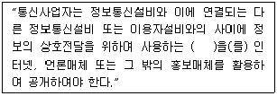
- 시험 성적서
- 통신규약
- 공사 설계서
- 이용약관
(정답률: 알수없음)
80. 다음 ( )안에 들어갈 내용으로 가장 적합한 것은?
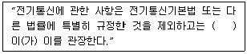
- 국무총리
- 한국통신사장
- 과학기술부장관
- 정보통신부장관
(정답률: 알수없음)